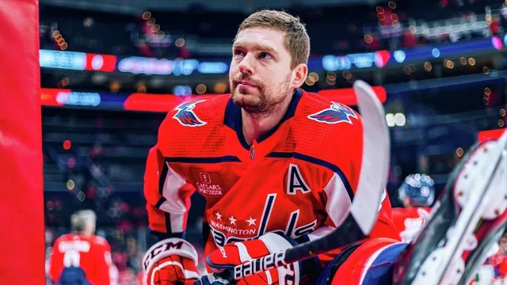

01:55 06.02.2024 (обновлено: 11:38 06.02.2024)
Друг Овечкина временно покинул "Вашингтон". Новая эпидемия в НХЛ?
Форвард "Вашингтона" Евгений Кузнецов пройдет программу помощи хоккеистам НХЛ
Минувшие выходные дали возможность сделать передышку всем, кто следит за Национальной хоккейной лигой. В Торонто прошел звездный уикенд, который запомнился победой команды Остона Мэттьюса с Джастином Бибером и Игорем Шестеркиным, а также троллингом в исполнении Никиты Кучерова в адрес канадских фанатов. В этот период участники Матча звезд смогли вдоволь порезвиться, а остальные игроки — отдохнуть и нормально восстановиться перед ключевой частью сезона.
Однако возобновление чемпионата вышло печальным. В первый же день новой игровой недели НХЛ выступила с грустными новостями — Евгений Кузнецов временно покинул расположение "Вашингтон Кэпиталз". Тревожные вести поступили из стана "столичных" еще после утренней тренировки команды, которую российский нападающий пропустил. Как утверждал главный тренер "Кэпс" Спенсер Карбери, "по личным причинам". Ближе к вечеру лига совместно с Ассоциацией игроков НХЛ (NHLPA) объявила о том, что Кузнецов пройдет программу помощи игрокам лиги. На период лечения он не будет доступен для выступления за "Вашингтон".
С какими именно проблемами столкнулся российский форвард, не сообщается. Сама программа была запущена НХЛ в 1996 году, ее цель заключается в помощи игрокам справиться с проблемами психического здоровья или зависимостью (алкогольной или наркотической). Период прохождения этой программы является неограниченным: хоккеисты возвращаются в расположение своих команд, когда считают, что полностью восстановились и прошли лечение. Важным элементом этой программы остается конфиденциальность — информация о здоровье игроков остается строго приватной. Правда, это не защищает их от распространения слухов в СМИ.
Кузнецов по ходу текущего чемпионата выступает не лучшим образом. В 43 матчах он набрал 17 очков (6 голов и 11 передач), его показатель полезности — "минус 11". Нынешний сезон по статистике — один из худших в карьере россиянина в НХЛ. Сам Евгений на протяжении всей "регулярки" нередко подвергается критике со стороны североамериканских СМИ. Недовольство игроком выражал и Карбери. В один момент главный тренер "Вашингтона" даже перевел Кузю в запас. Наставник "Кэпс" объяснял свое решение дать россиянину возможность "ментально перезагрузиться". Позднее Кузнецов признал, что ему это было необходимо.
Остается надеяться, что звездный российский форвард решит свои проблемы, восстановится и в ближайшее время вернется в строй, а вместе с этим — на свой былой уровень.
Главные новости
-
Друг Овечкина временно покинул "Вашингтон". Новая эпидемия в НХЛ?
11.38
-
Бетербиев и Бивол подерутся летом! Отвечаем на пять главных вопросов по бою
12.53
-
Последний шанс. Хэмилтон идет в "Феррари" за рекордным титулом
12.53
-
В "Шанхае" - без раскачки: клуб Слуцкого разгромно проиграл "Зениту"
12.53
-
Самсонова вышла в полуфинал турнира в Абу-Даби
14.13
-
Лебедев назвал формальностью нейтральный статус россиян на Олимпиаде
10.05